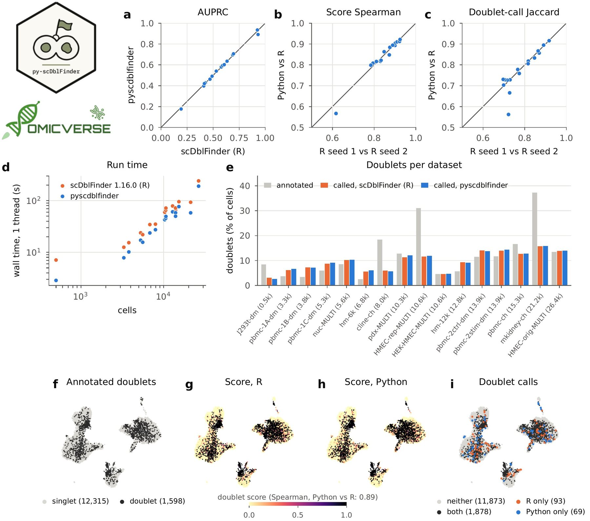

pyscdblfinder: a Python implementation of scDblFinder for doublet detection in single-cell data
Affiliations
- 1 Department of Genetics, Stanford University, Stanford, CA 94305, USA
- 2 OmicVerse, Inc., San Francisco, CA 94114, USA
- 3 Hubei Key Laboratory of Agricultural Bioinformatics, College of Informatics, Huazhong Agricultural University, Wuhan 430070, China
OmicVerse Technical Reports (2026)Cite this article
Download PDFAbstract
We present pyscdblfinder, a Python implementation of scDblFinder for doublet detection in single-cell RNA-seq and ATAC-seq data, covering artificial-doublet generation, co-expression and nearest-neighbour features, the iterative gradient-boosted classifier, thresholding against the expected doublet rate, feature aggregation for chromatin data and AMULET. pyscdblfinder follows scDblFinder's code paths step by step and is versioned against a specific scDblFinder release; the steps that use no random numbers return the same values as R. On the 16 real datasets of an independent doublet-detection benchmark (168,239 cells, 3–37% doublets annotated experimentally), pyscdblfinder detects annotated doublets as accurately as scDblFinder 1.16.0 (mean area under the precision–recall curve 0.560 versus 0.562), and its scores agree with scDblFinder's as closely as two runs of scDblFinder with different seeds (median Spearman correlation 0.874 in both cases), while running 1.1–2.5 times faster on one thread. pyscdblfinder is the default doublet detector of OmicVerse quality control and is released under GPL-3.0 at https://github.com/omicverse/py-scDblFinder and on PyPI.
- scDblFinder
- doublet detection
- single-cell RNA-seq
- quality control
- xgboost
- Python
- reproducibility
Introduction
Droplet-based single-cell sequencing captures two or more cells in the same droplet at a rate that grows with the number of cells loaded, and these doublets are a routine quality-control concern1. Doublets of different cell types look like intermediate or novel cell states and can distort clustering, trajectories and differential expression, so computational doublet detection is a standard step of single-cell analysis1,2. scDblFinder3 mixes real cells with artificial doublets made from random pairs of cells and describes every cell by the composition of its neighbourhood, a co-expression score4 and library-size features. A gradient-boosted tree classifier5 then learns to tell the two apart, refining its training set over several iterations. On the real datasets of the benchmark of Xi and Li2 it was among the most accurate methods in its authors' comparison3.
Single-cell analysis is increasingly done in Python. Workflows are built on scanpy and the scverse ecosystem6,7, and OmicVerse8 brings bulk, single-cell and spatial analyses together in one Python framework. Python offers doublet detectors of its own, such as Scrublet9, but scDblFinder is available only in R.
Python users currently reach scDblFinder through rpy210. This requires a parallel R and Bioconductor installation, converts the count matrix between the two languages and exposes scDblFinder's options only through the binding layer. A native implementation removes all three costs, as PyDESeq211 has shown for DESeq212 and pyedger13 for edgeR14. We set the same target for pyscdblfinder: a doublet analysis in Python should detect doublets as accurately as scDblFinder and agree with it as closely as scDblFinder agrees with itself.
Here we present pyscdblfinder, a Python implementation of scDblFinder that is versioned against a specific scDblFinder release. We describe its implementation and compare it with scDblFinder 1.16.0 on the 16 real datasets of the Xi and Li benchmark2.
Implementation
Method
scDblFinder first generates artificial doublets by summing the counts of random pairs of cells, by default 80% as many as there are real cells (at least 1,500 and at most 25,000). Real and artificial cells are then reduced to the most highly expressed genes, log-normalised by library size15 and projected on their first 20 principal components. For every cell, scDblFinder records the proportion of artificial doublets among its nearest neighbours for a grid of neighbourhood sizes, a distance-weighted version of this proportion and the distances to the nearest real and artificial cells. It adds the cxds co-expression score4, the library size and the number of detected genes. A gradient-boosted tree classifier (xgboost5) is trained on these features to separate real from artificial cells, with the number of boosting rounds chosen by cross-validation. Training is repeated three times; after each round the real cells already scored as likely doublets are removed from the training set. Finally, a score threshold is chosen that balances the misclassification of real and artificial cells against the deviation of the number of called doublets from the expected doublet rate, which by default grows by 1% per thousand cells3.
Features and code structure
pyscdblfinder 0.3.2 implements the single-sample workflow of scDblFinder 1.16 (Table 1): artificial-doublet generation with its library-size adjustments, the cxds score, the kNN features, the iterative classifier and the thresholding, as well as optional user-supplied clusters. For chromatin data it implements scDblFinder's feature aggregation with TF-IDF normalisation, AMULET16 on fragment files and from counts, the clamulet classifier and the combination of scDblFinder and AMULET by Fisher's method. sc_dbl_finder takes a features × cells matrix like scDblFinder; the ScDblFinder class runs on an AnnData object17 and writes scDblFinder_score and scDblFinder_class to its cell table. pyscdblfinder builds on NumPy18, SciPy19, pandas20, scikit-learn21 and the xgboost Python package5, and runs on one thread by default, as scDblFinder does.
| scDblFinder | pyscdblfinder | Agreement with scDblFinder 1.16.0 |
|---|---|---|
| gene selection | sc_dbl_finder | same genes, same order |
| library-size features | sc_dbl_finder | identical |
| .defaultKnnKs | r_default_knn_ks | same neighbourhood sizes |
| doubletThresholding | doublet_thresholding | threshold, relative difference below $10^{-9}$ |
| getArtificialDoublets | get_artificial_doublets | same pairing rules; random pairs |
| scDblFinder (scores) | sc_dbl_finder | Spearman 0.874 with R; R seed to seed 0.874 |
| scDblFinder (calls) | sc_dbl_finder | Jaccard 0.768 with R; R seed to seed 0.770 |
Numerical parity with scDblFinder
pyscdblfinder ports scDblFinder's code paths instead of re-deriving the method. These include the choice of genes by mean count with R's ordering of ties, scuttle's log-normalisation15, and scDblFinder's rules for pairing, halving and resampling artificial doublets. They also include its grid of neighbourhood sizes, the rules that exclude cells from training, the cross-validated choice of boosting rounds with exact tree construction, and the thresholding objective, which is minimised with Brent's method as in R's optimize. Given the same scores, pyscdblfinder returns scDblFinder's threshold and doublet calls. Of the 35 tests in the test suite, 8 compare pyscdblfinder with stored output of scDblFinder 1.16.0, which the steps without random numbers must match. Artificial doublets and xgboost's training draw random numbers, which R and Python generate differently, so scores from the two languages, like scores from two R seeds, are not identical cell by cell. pyscdblfinder versions follow scDblFinder releases (0.3.x tracks scDblFinder 1.16.0).
Use in OmicVerse
pyscdblfinder is the default doublet detector of OmicVerse8 quality control: ov.pp.qc(adata) runs it on the raw counts, once per sample when batch_key is given, and removes the cells it calls doublets; with filter_doublets=False it keeps them and records their scores and calls in adata.obs.
Comparison with scDblFinder on real data
Data and design
We used the 16 real datasets of the Xi and Li doublet-detection benchmark2, in which doublets were annotated experimentally by demultiplexing genotypes with demuxlet22 (6 datasets), cell hashing23 (3), MULTI-seq24 (5) or mixing human and mouse cells (2). The datasets have 500 to 26,426 cells (168,239 in total), of which 3 to 37% are annotated doublets. Both packages ran with default settings on the counts as provided, scDblFinder 1.16.0 from R and pyscdblfinder from Python, each with seeds 1 and 2. We compared four criteria (Supplementary methods). The first is the detection of annotated doublets, measured by the area under the precision–recall curve (AUPRC25) and the ROC curve (AUROC). The second is the agreement of the doublet scores (Spearman correlation) and calls (Jaccard index) between Python and R, set against the agreement between the two R seeds. The last two are the fraction of cells called doublets and run time.
Doublet detection and agreement with scDblFinder
pyscdblfinder detected the annotated doublets as accurately as scDblFinder (Fig. 1a). Averaged over datasets and seeds, the AUPRC was 0.560 for pyscdblfinder and 0.562 for scDblFinder, and the AUROC 0.794 and 0.796. Per dataset the AUPRC of the two packages differed by at most 0.040, while the AUPRC of scDblFinder itself varied by up to 0.042 between its two seeds.

Python and R agreed with each other as closely as two R runs with different seeds (Fig. 1b, c). The median Spearman correlation of the doublet scores was 0.874 between Python and R and 0.874 between R seeds, and the ratio of the two was 1.00 at the median and 0.92 at the lowest. The cells called doublets overlapped with a median Jaccard index of 0.768 between Python and R and 0.770 between R seeds. The lowest agreement was on J293t-dm, the smallest dataset (500 cells, 16 doublets called by R), where the Jaccard index was 0.56 between Python and R and 0.72 between R seeds.
On pbmc-2ctrl-dm, a dataset of 13,913 peripheral blood cells with 1,598 doublets annotated by demuxlet, the two packages mark the same cells in the embedding (Fig. 1f–i). High scores from both packages fall on the annotated doublets scattered through the cell-type clusters (Spearman correlation of the scores 0.89), and 1,878 cells were called doublets by both packages, 93 by scDblFinder only and 69 by pyscdblfinder only.
Called doublets and speed
Both packages called 3 to 16% of cells doublets, and per dataset their called fractions differed by at most 0.8 percentage points (median 0.2; Fig. 1e). Where the annotated fraction was far above the expected doublet rate, as in HMEC-rep-MULTI and mkidney-ch, both called fewer doublets than were annotated.
pyscdblfinder ran 1.1 to 2.5 times faster than scDblFinder (median 1.4), both on one thread (Fig. 1d). For HMEC-orig-MULTI, the largest dataset (26,426 cells), scDblFinder took 241 s and pyscdblfinder 190 s.
Conclusion and future perspectives
pyscdblfinder brings scDblFinder's doublet detection to Python. On 16 real datasets with experimentally annotated doublets it is as accurate as scDblFinder 1.16.0, agrees with it as closely as scDblFinder agrees with itself across seeds, calls the same fraction of doublets and runs faster on one thread. Because pyscdblfinder works on AnnData objects and is the default doublet detector of OmicVerse quality control, doublet removal can run in the same Python session as the rest of a single-cell workflow.
Future work includes the parts of scDblFinder beyond the single-sample workflow: the multi-sample modes, the use of known doublets, cluster-correlation features, and the functions recoverDoublets, findDoubletClusters and computeDoubletDensity. pyscdblfinder will continue to follow scDblFinder releases, with each version pinned to the release it reproduces.
Data and code availability
pyscdblfinder is released under GPL-3.0 on PyPI (pip install pyscdblfinder) and at https://github.com/omicverse/py-scDblFinder; this report describes version 0.3.2. The benchmark was run with release 0.3.1, whose sc_dbl_finder gives results identical to 0.3.2. The benchmark (report/scripts in the repository) reproduces every number and figure in this report. The Xi and Li real datasets were obtained from Zenodo (https://doi.org/10.5281/zenodo.4562782), accessed on 9 November 2026. Software: pyscdblfinder (Python 3.10, NumPy 2.2.6, SciPy 1.15.2, scikit-learn 1.7.2, xgboost 3.0.5; scanpy 1.11.5 for Fig. 1f–i); scDblFinder 1.16.0 with xgboost 1.7.6.1 on R 4.3.3 (bioconda). Hardware: one node of the Stanford Sherlock cluster (Intel Xeon Platinum 8462Y+, 20 cores allocated).
Declaration of generative AI and AI-assisted technologies
The authors used Claude Opus 5.5, GPT-6 Astra, and OmicOS to proofread grammar and syntax, improve readability. Any AI-assisted edits were reviewed by the authors, who take full responsibility for the content of this publication.
Conflicts of interest
Z.Z. and X.M. are affiliated with OmicVerse, Inc.
References
- 1.Heumos L, Schaar AC, Lance C, et al. (2023). Best practices for single-cell analysis across modalities. Nature Reviews Genetics 24, 550-572. 10.1038/s41576-023-00586-w
- 2.Xi NM, Li JJ (2021). Benchmarking computational doublet-detection methods for single-cell RNA sequencing data. Cell Systems 12, 176-194.e6. 10.1016/j.cels.2020.11.008
- 3.Germain P-L, Lun A, Garcia Meixide C, Macnair W, Robinson MD (2022). Doublet identification in single-cell sequencing data using scDblFinder. F1000Research 10, 979. 10.12688/f1000research.73600.2
- 4.Bais AS, Kostka D (2020). scds: computational annotation of doublets in single-cell RNA sequencing data. Bioinformatics 36, 1150-1158. 10.1093/bioinformatics/btz698
- 5.Chen T, Guestrin C (2016). XGBoost: a scalable tree boosting system. Proceedings of the 22nd ACM SIGKDD International Conference on Knowledge Discovery and Data Mining, 785-794. 10.1145/2939672.2939785
- 6.Wolf FA, Angerer P, Theis FJ (2018). SCANPY: large-scale single-cell gene expression data analysis. Genome Biology 19, 15. 10.1186/s13059-017-1382-0
- 7.Virshup I, Bredikhin D, Heumos L, et al. (2023). The scverse project provides a computational ecosystem for single-cell omics data analysis. Nature Biotechnology 41, 604-606. 10.1038/s41587-023-01733-8
- 8.Zeng Z, Ma Y, Hu L, et al. (2024). OmicVerse: a framework for bridging and deepening insights across bulk and single-cell sequencing. Nature Communications 15, 5983. 10.1038/s41467-024-50194-3
- 9.Wolock SL, Lopez R, Klein AM (2019). Scrublet: computational identification of cell doublets in single-cell transcriptomic data. Cell Systems 8, 281-291.e9. 10.1016/j.cels.2018.11.005
- 10.Gautier L. rpy2: Python interface to the R language. https://rpy2.github.io
- 11.Muzellec B, Teleńczuk M, Cabeli V, Andreux M (2023). PyDESeq2: a python package for bulk RNA-seq differential expression analysis. Bioinformatics 39, btad547. 10.1093/bioinformatics/btad547
- 12.Love MI, Huber W, Anders S (2014). Moderated estimation of fold change and dispersion for RNA-seq data with DESeq2. Genome Biology 15, 550. 10.1186/s13059-014-0550-8
- 13.Zeng Z, Meng X (2026). pyedger: a Python implementation of edgeR for differential expression analysis. OmicVerse Technical Reports. https://omicverse.org/articles/pyedger.html
- 14.Robinson MD, McCarthy DJ, Smyth GK (2010). edgeR: a Bioconductor package for differential expression analysis of digital gene expression data. Bioinformatics 26, 139-140. 10.1093/bioinformatics/btp616
- 15.McCarthy DJ, Campbell KR, Lun ATL, Wills QF (2017). Scater: pre-processing, quality control, normalization and visualization of single-cell RNA-seq data in R. Bioinformatics 33, 1179-1186. 10.1093/bioinformatics/btw777
- 16.Thibodeau A, Eroglu A, McGinnis CS, et al. (2021). AMULET: a novel read count-based method for effective multiplet detection from single nucleus ATAC-seq data. Genome Biology 22, 252. 10.1186/s13059-021-02469-x
- 17.Virshup I, Rybakov S, Theis FJ, Angerer P, Wolf FA (2024). anndata: access and store annotated data matrices. Journal of Open Source Software 9, 4371. 10.21105/joss.04371
- 18.Harris CR, Millman KJ, van der Walt SJ, et al. (2020). Array programming with NumPy. Nature 585, 357-362. 10.1038/s41586-020-2649-2
- 19.Virtanen P, Gommers R, Oliphant TE, et al. (2020). SciPy 1.0: fundamental algorithms for scientific computing in Python. Nature Methods 17, 261-272. 10.1038/s41592-019-0686-2
- 20.McKinney W (2010). Data structures for statistical computing in Python. Proceedings of the 9th Python in Science Conference, 56-61. 10.25080/Majora-92bf1922-00a
- 21.Pedregosa F, Varoquaux G, Gramfort A, et al. (2011). Scikit-learn: machine learning in Python. Journal of Machine Learning Research 12, 2825-2830. https://jmlr.org/papers/v12/pedregosa11a.html
- 22.Kang HM, Subramaniam M, Targ S, et al. (2018). Multiplexed droplet single-cell RNA-sequencing using natural genetic variation. Nature Biotechnology 36, 89-94. 10.1038/nbt.4042
- 23.Stoeckius M, Zheng S, Houck-Loomis B, et al. (2018). Cell Hashing with barcoded antibodies enables multiplexing and doublet detection for single cell genomics. Genome Biology 19, 224. 10.1186/s13059-018-1603-1
- 24.McGinnis CS, Patterson DM, Winkler J, et al. (2019). MULTI-seq: sample multiplexing for single-cell RNA sequencing using lipid-tagged indices. Nature Methods 16, 619-626. 10.1038/s41592-019-0433-8
- 25.Saito T, Rehmsmeier M (2015). The precision-recall plot is more informative than the ROC plot when evaluating binary classifiers on imbalanced datasets. PLOS ONE 10, e0118432. 10.1371/journal.pone.0118432
- 26.Becht E, McInnes L, Healy J, et al. (2019). Dimensionality reduction for visualizing single-cell data using UMAP. Nature Biotechnology 37, 38-44. 10.1038/nbt.4314
Supplementary information
Supplementary methods
Data. The 16 datasets of real_datasets.zip (Zenodo record 4562782) were read in R, and each count matrix (genes × cells) and its doublet annotation were written to Matrix Market and text files that both packages read. No cells or genes were removed; scDblFinder and pyscdblfinder received the same matrices.
Runs. In R: set.seed(seed) and scDblFinder(sce) on a SingleCellExperiment with the counts, with default arguments. In Python: sc_dbl_finder(counts, random_state=seed) with default arguments. Each package ran once per dataset with seed 1 and once with seed 2.
Evaluation. AUPRC (average precision) and AUROC were computed with scikit-learn from the doublet scores and the annotations. Agreement between Python and R is the mean over the four pairs of a Python seed and an R seed; agreement within R compares seed 1 with seed 2. Spearman correlations are over the scores of all cells of a dataset, and Jaccard indices over the sets of cells called doublets.
Embedding (Fig. 1f–i). Counts of pbmc-2ctrl-dm were normalised to 10,000 per cell and log-transformed with scanpy6; the 2,000 most variable genes were reduced to 30 principal components, and UMAP was computed on a 15-nearest-neighbour graph. The embedding is for display only; both packages scored the raw counts.
Run time. Run times are wall-clock times of the call above, without reading and writing files. Every run was pinned to its own processor core with BLAS and OpenMP limited to one thread; R and Python runs were spread over the same cores of one node at the same time, so that both packages were timed under the same load.
Notes for users coming from R
- Versions. pyscdblfinder 0.3.x tracks scDblFinder 1.16.0, including its defaults (an expected doublet rate of 1% per thousand cells, 1,352 genes, 20 principal components, three classifier iterations).
- Matrix orientation.
sc_dbl_findertakes a features × cells matrix, as scDblFinder does; theScDblFinderclass takes an AnnData object (cells × genes) with raw counts inXor in a layer. - Seeds.
random_stateplays the role ofset.seed. The same seed in R and Python gives different artificial doublets, so results are compared across seeds. - Several samples. pyscdblfinder runs one sample at a time;
ov.pp.qc(..., batch_key=...)runs it per sample, as scDblFinder'ssamplesargument does by default.
Author information
Affiliations
- 1 Department of Genetics, Stanford University, Stanford, CA 94305, USA
- 2 OmicVerse, Inc., San Francisco, CA 94114, USA
- 3 Hubei Key Laboratory of Agricultural Bioinformatics, College of Informatics, Huazhong Agricultural University, Wuhan 430070, China
Corresponding authors
Correspondence to Zehua Zeng.
Cite this article
Zeng, Z. & Meng, X. pyscdblfinder: a Python implementation of scDblFinder for doublet detection in single-cell data. OmicVerse Technical Reports (2026). https://omicverse.org/articles/pyscdblfinder
@techreport{zeng2026pyscdblfinder,
title = {pyscdblfinder: a Python implementation of scDblFinder for doublet detection in single-cell data},
author = {Zeng, Zehua and Meng, Xu},
institution = {OmicVerse},
type = {Technical Report},
year = {2026},
url = {https://omicverse.org/articles/pyscdblfinder}
}